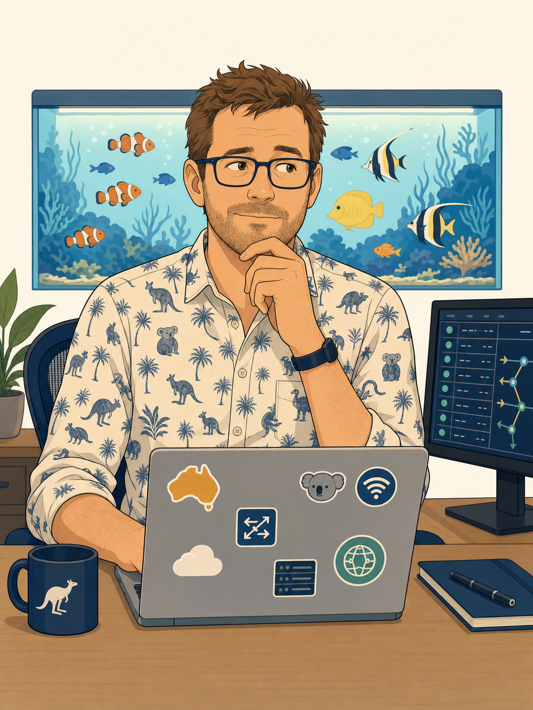
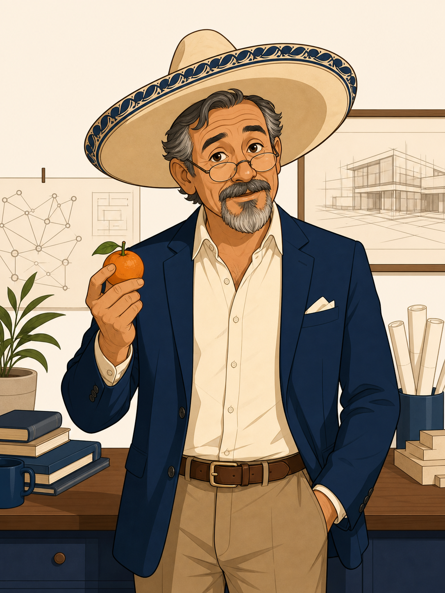
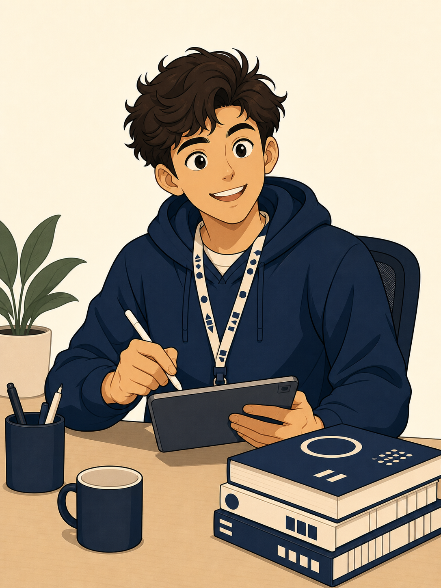
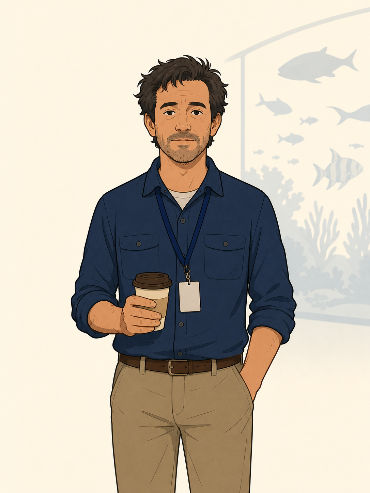
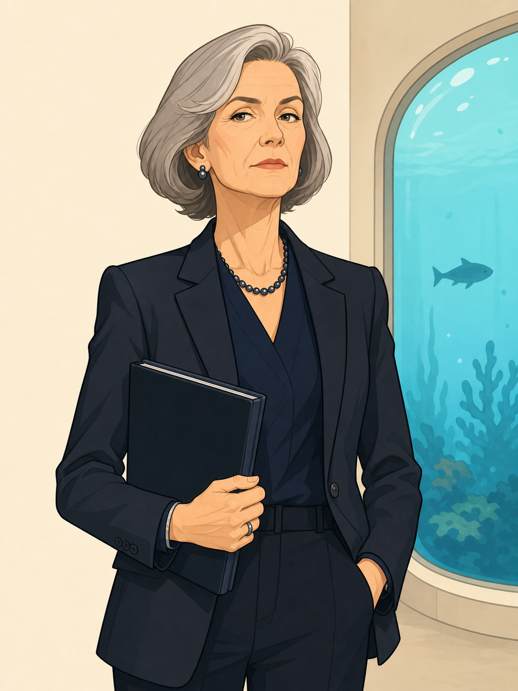
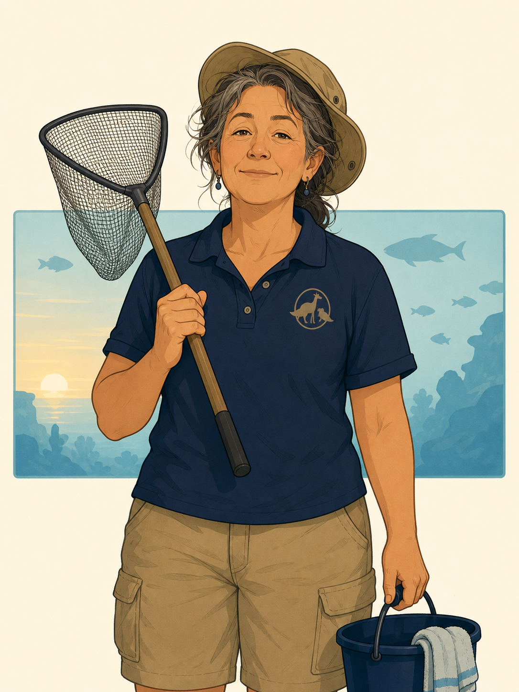
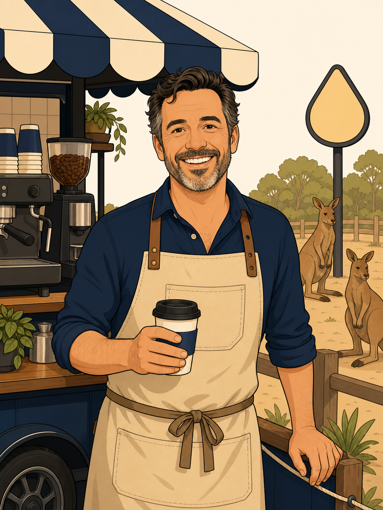
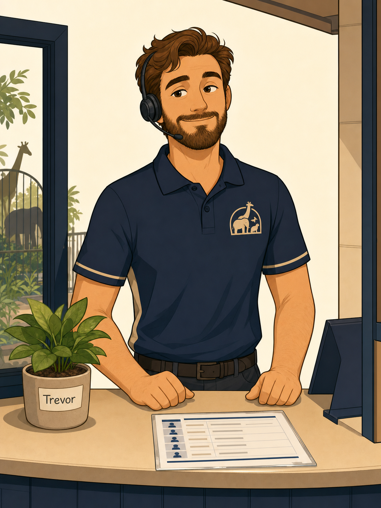
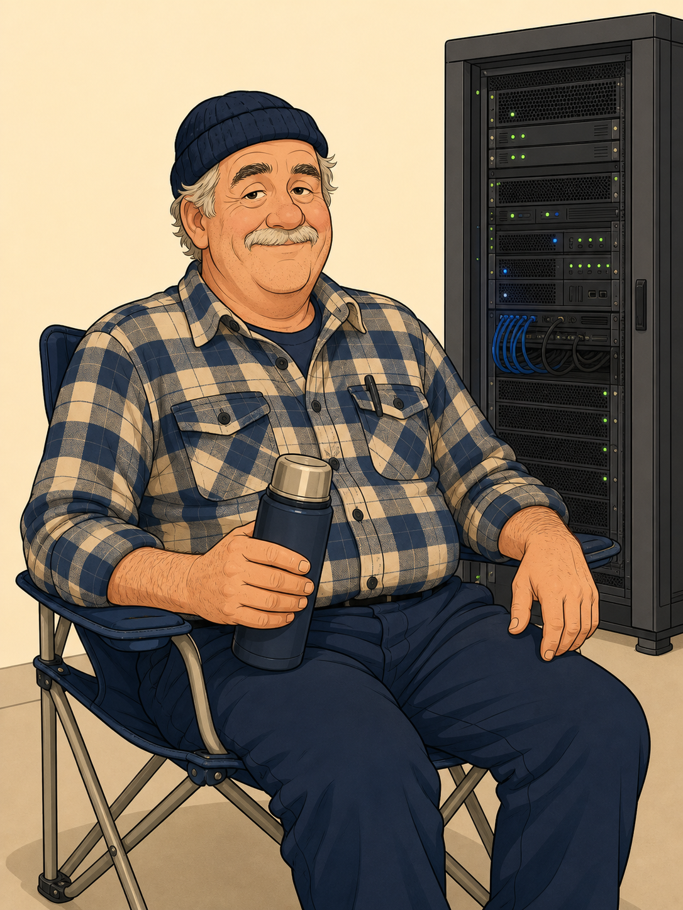

The Core Cast
The nine characters the study project turns on — including one whose actual name nobody has ever established.
images/prompts.txt.Strong SD-WAN operational instincts and a rising suspicion that he is now the most senior engineer in the building. Occasionally reaches for the CLI before he has worked out where the decision is actually made. Sits with the fish wall behind him.

images/prompts.txt.Wears the sombrero everywhere except when using the cold aisle at Tuggers. Calls Samwise “Amigo,” “Muchacho,” or “Compadre,” depending on the severity. Typically arrives holding either a burrito, a mandarin, or a Corona with a lemon twist — and pretends this is coincidence. Coaches through precise Socratic questions and progressively stronger hints.

images/prompts.txt.Asks the questions everyone else was too embarrassed to ask, and therefore does more for the team’s comprehension than any senior does. Learning to form independent hypotheses. Wears the same hoodie three days in a row and refuses to be embarrassed about it.

images/prompts.txt.Turns up in every scene that matters. Seems to work across field operations, research, facilities, and procurement. Nobody has ever asked him for a name, a title, or a job description — and Fish has never volunteered one. Calm, oddly informed, unexpectedly useful. Supplies field symptoms, missing operational facts, and the occasional key clue.
images/prompts.txt.Exact about ZTP, templates, mappings, revisions, and installation targets. Maintains a personal spreadsheet of every metadata variable in the estate; updates it faster than FortiManager can. Has never lost an argument about whether a change belongs in a template or a per-device override.
images/prompts.txt.Runs the SOC out of a dim corner beside the fish wall. Uses FortiAnalyzer, FortiSASE logs, SOCaaS, and forensics. Evidence-driven to the point of being pointed about it: no change lands without a log, a packet, or a session-state confirmation.
images/prompts.txt.The translator. Turns “the ZTNA access proxy rejected the session before posture returned” into “licensing calls dropped for eleven minutes and the phones lit up.” Owns the SPA catalogue and the awkward conversations that follow every incident. Refuses to sign a fix without a user-facing outcome attached.
images/prompts.txt.Owns endpoint profiles, posture tags, compliance rules, SAML, and the FortiClient rollout. Introduced gradually across the seasons: first appears in Season 1 as “the endpoint person Aisha keeps mentioning,” owns Season 3’s posture episodes, and quietly becomes the last line of defence in Season 6. Doesn’t enjoy being described as “quiet,” but is.

images/prompts.txt.Career public servant. Wants risk in one sentence, business impact in the next, and mitigation in the third. Nothing further. Takes a slow lap of the kangaroo enclosure before signing anything of consequence — either superstition, decision hygiene, or both.
The Supporting Cast
Four people who never appear in an ADR but without whom nothing at the Zoo would actually work.
images/prompts.txt.Officially a Zoo employee, not a Department one. Arrives twice a week before opening, tests the water, feeds the reef, leaves before anyone can talk to her. Treats the SOC monitors as tank-adjacent flora. Has never introduced herself, but everyone knows her name because she leaves labelled sandwiches in the fridge occasionally.

images/prompts.txt.Runs the coffee cart on the far side of the kangaroo enclosure. Espresso, macchiato, flat white, cold brew. No substitutions after 10am, no exceptions. Sells laminated landmine-safe route maps for a dollar. Season-ending architecture reviews couldn’t happen without him and he knows it.

images/prompts.txt.The first person a vendor meets, and the last person a departing contractor sees. Effectively runs informal access control for the whole Department without ever having been asked. His plant, Trevor, sits on the counter and is thriving.

images/prompts.txt.Has been at Tuggers longer than the Department has existed. Officially Grounds staff, though nobody has explained what he grounds inside a data centre. Occupies the annex — one rack, one lawn chair, one thermos. Nobody has ever seen him touch the rack.